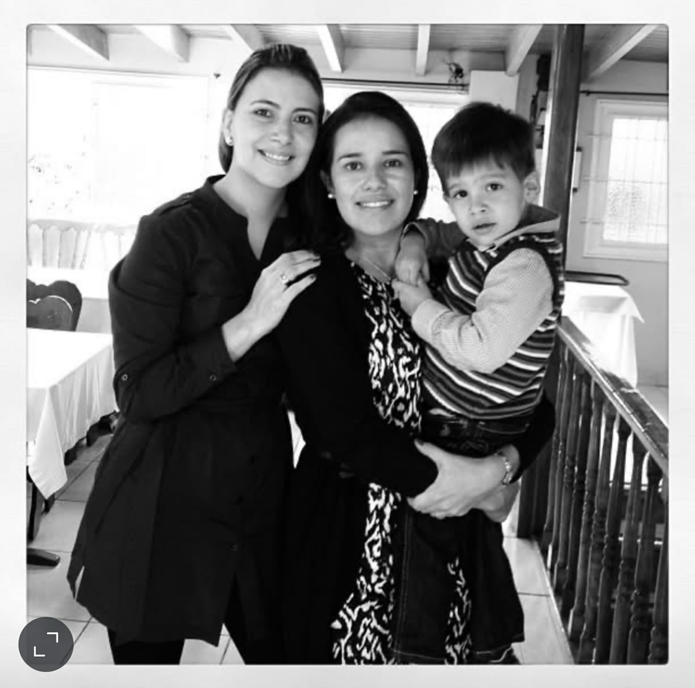
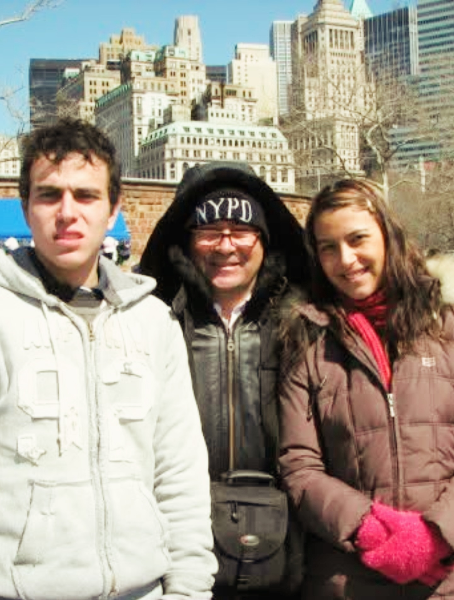
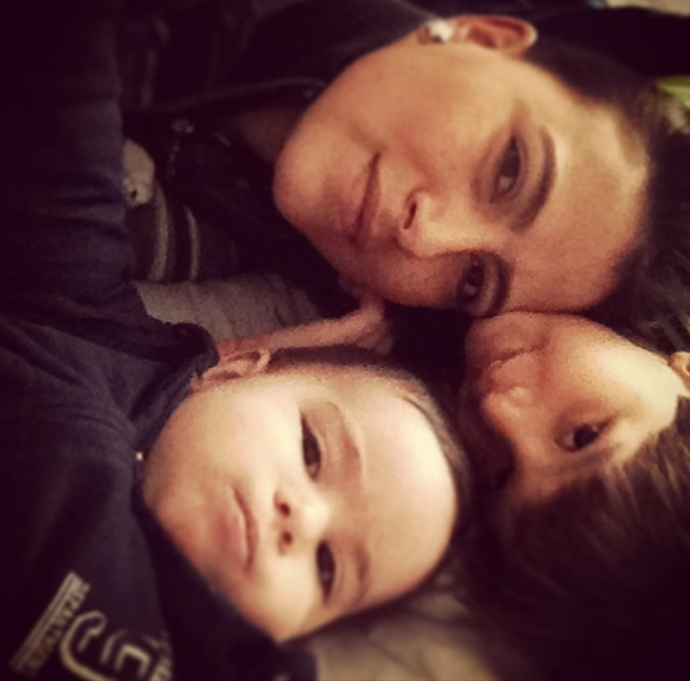
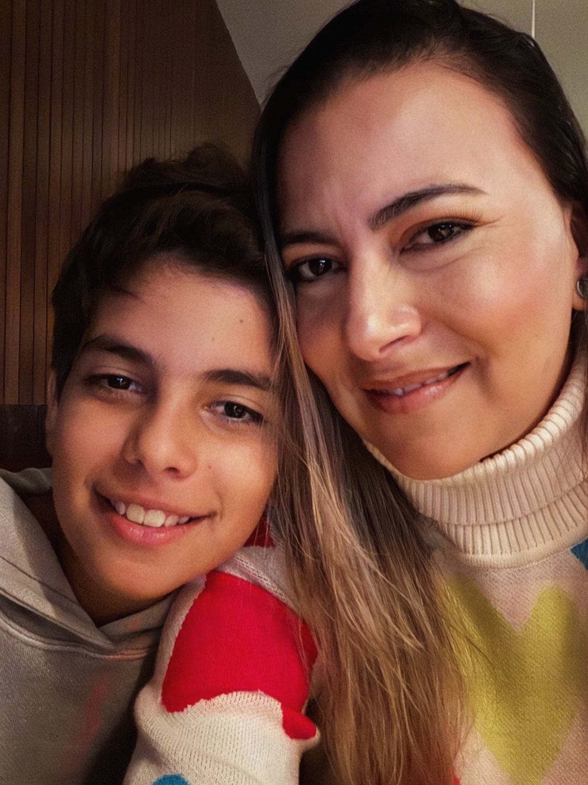
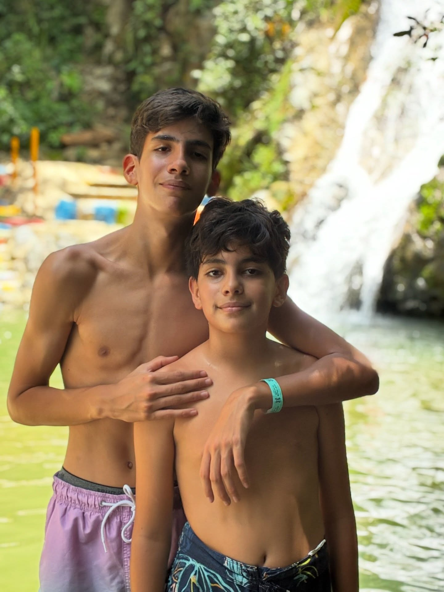
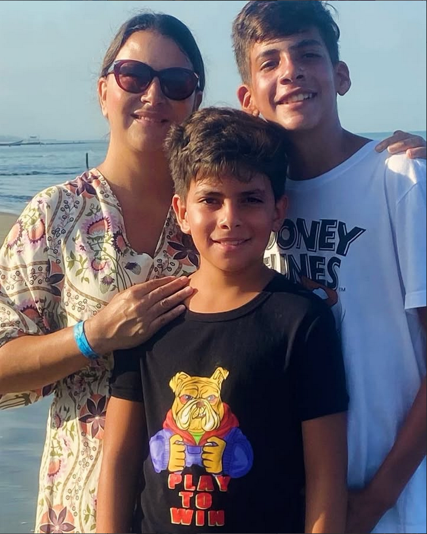

— Recuerdos —
Momentos lindos




— Carta —
Para ti, Mamá
Querida mamá,
Te quiero mucho, siempre te agradecere todos los sacrificios que has hecho por nosotros.
Cuando nos llevabas al medico o te sentabas a hacer tareas con nosotros apesar de que estuvieras cansada
Admiro tu fuerza y tus ganas de siempre seguir adelante
Y ojala disfrutes mucho este dia tan especial
Con todo mi amor,
Juan


— Mis momento favorito de estos ultimos años —
El día que…
Cuando querias pasar tiempo en familia con nosotros, asi que nos llevaste a las cascadas, donde nos reimos y disfrutamos como familia
O cuando fuimos a tolú junto a los titos y la pasamos muy rico